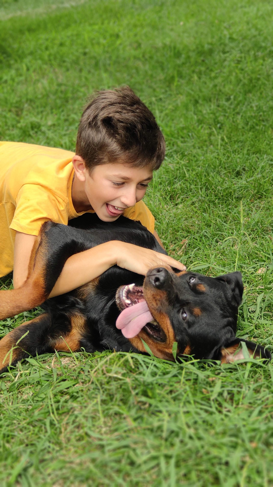
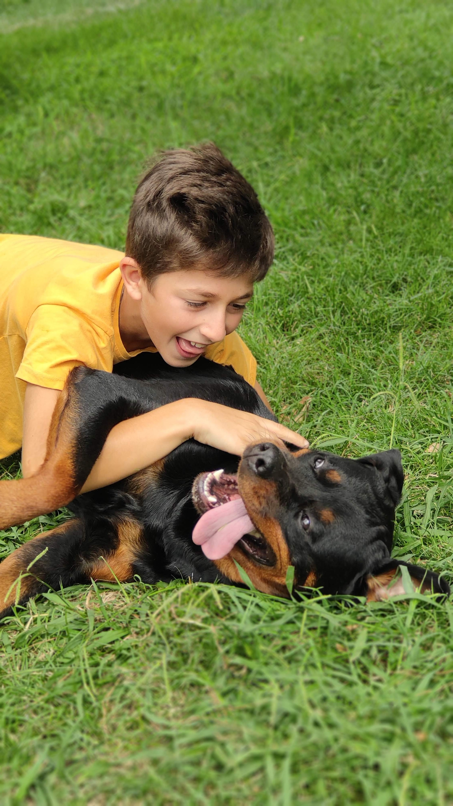

Rottweiler History: From Working Dog to Sporting, Therapy Dog
People stop and stare when a Rottweiler appears on the scene. This medium to large working dog has striking coloring (black with brown markings ranging from rust to mahogany) and a muscular frame. Loyal, intelligent, and courageous, the breed gives off an air of nobility and self-confidence. In fact, the Rottweiler’s versatility has attracted people for millennia.
 

The Rottweiler’s Roots
The Rottweiler we know today descends from mastiffs that lived in the Roman Empire more than 2,000 years ago. These rugged dogs accompanied Roman legions north through the Alps, since these soldiers were on their way to invade what’s now Switzerland. Along the way, ancestors of the Rottweiler helped move cattle that was intended to be eaten or eventually sold, and kept the livestock safe from predators and thieves. The Romans frequently stopped in what is now Rottweil, Germany, a significant center for livestock trade in the south. The city gets its modern name from its red roof tiles, but in ancient times, it was known as Arae Flaviae. After the Roman Empire collapsed, Rottweilers became valuable working companions in this part of Germany. They herded livestock in butchers’ yards, and would pull heavy carts full of meat to market. After the sale, a “drover,” someone who moves livestock, often placed the money in a purse around the dog’s neck. One look at this proud, protective breed might have made potential robbers think twice. Soon, the dog became known as the “Rottweiler Metzgerhund,” or “Butcher’s Dog of Rottweil.” Over the centuries, the breed was crossed with other developing breeds, such as the Greater Swiss Mountain Dog, the Bernese Mountain Dog, the Entlebucher Mountain Dog, and the Appenzeller Sennenhund.